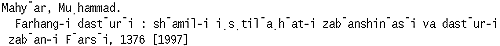

Persian Cataloging Page
Persian NACO Manual: Table of Contents
Persian names, like any other Arabic alphabet names, are deeply influenced
by the Arabic language. Yet, they often contain some non-Arabic elements
such as affixes which differentiate them from Arabic names. In
establishing Persian names in the NAF one cannot ignore the fact that
Persian names exist in their unique form and must be dealt with
differently than Arabic names.
Types of Persian Surnames
Persian personal names may have single or multiple surname elements and
appear in title pages as follows:
- Surnames with affixes.
Examples: Bahramzadah, Aryanpur, Kiyanfar, etc. (-zadah, -pur, -far are
affixes)
- Compound surnames.
Examples: Darya Bandari, Shariat Panahi, Mushfiq Kashani
- Arabic names: If the author is modern and writes predominantly in
Persian, he/she must be romanized according to the Persian romanization
table and entry should follow Arabic NACO guidelines.
Example: Ruh al-Amini al-Baghdadi.
What is a modern author?
Modern authors are those active in the 20th century (22.22A1). Our rule
of thumb is to treat authors living during any part of the 20th century as
modern.
Authors whose life spanned both the 19th and 20th centuries may be
treated as classical if it can be determined that they were primarily
active during the 19th century.
Choice of Entry for Modern Authors
There are various name-comprising elements in Persian title pages. The first or the
last element in the t.p. is not always the true surname for Persian
authors. [See AACR2: Names in the Arabic alphabet, 22.22 and 22.22B]
In establishing Persian multi-element surnames we need to
determine which element or combination of elements qualify as the appropriate surname.
If the surname is a multi-element surname (names with affixes) or a
compound name (names with word components) enter the name heading as
follows:
- Surname with affixes: name elements must be kept intact in the main
heading entry.
|
Example: | Hushang Nur Niya (as on t.p.)
Main heading entry: Nurniya, Hushang (not Nur Niya, Hushang) | |
Example: | Farrukh Jafar Pur (as on t.p.)
Main heading entry: Jafarpur, Farrukh (not Jafar Pur, Farrukh) |
- Compound surnames: must be kept intact with one space between the
various elements of the name.
|
Examples: | Ahmad Darya Bandari (as on t.p.); Hasan Qarakhani Bahar
Main heading entry: Darya Bandari, Ahmad (not Bandari, Ahmad Darya)
Main heading entry: Qarakhani Bahar, Hasan (not Bahar, Hasan
Qarakhani) |
In the Persian language, affixes are not true surnames and should not
be considered as independent name headings. However, exceptions exist
in the NAF. The following listing includes some examples of Persian
affixes:
abadi
an
anah
asa
ban
dan
dard
dil*
dis
dust
far
|
fard
gah
gar
ju
kadah
khanah
khvush
kiya
lakh
na
nadan
|
niya
nizhad
par
parast
pur
rad
sanj
sar
sar
sara
sir
|
sitan
talab
tar
vand
var
varah
vard
Yar
zadah, zad
zand
zar |
| *Treat as an affix. |
List taken from:

What is a Classical Author?
A classical author is one active prior to the 20th century. Any author
who died before 1900 is treated as classical.
Authors whose life spanned the 19th and 20th centuries may be treated
as modern it it is determined that they were primarily active during
the 20th century.
Choice of Entry for Classical Authors
The choices of entry element for Persian classical authors remain the
same as for Arabic classical authors. The main entry element may be any
of the various elements of a name -- khitab, kunyah, ism, patronymic,
laqab, or nisbah. "Determine this from reference sources" (22.22B1). If
the author is very well known or if the classical person is not an
author, reference sources such as the Encyclopaedia Iranica,
Encyclopaedia of Islam, Encyclopaedia Britannica may be consulted and
their data (dates, etc.) quoted in headings as they appear. In general,
consult at least one reference source aside from the piece in hand as
follows:
- If the author is found in Fihrist-i mustanad, choose the
element(s) in the entry-heading as the main heading entry element.
- If the author is not found in Fihrist-i mustanad, consult Storey
or any other reference source. If the author is not found in any
other reference source than Fihrist-i mustanad, use the entry element(s)
as found and provide references as appropriate.
- If the author is not found in any reference sources, choose as the
main heading entry element a surname in the following order:
- Takhallus.
- Phrases marked ma'ruf bih, mashhur bih, etc.
- Any unusual surname (not derived from a place name or madhhab).
- A surname derived from a place name (Isfahani).
- A surname derived from a madhab (Shafii)
- If there are no surname elements present, enter under the ism and
father-patronymic in direct order.
Note: In citing a second or
third reference source, quote the name in full.
Choice of Additional Elements in the Name
Add to the ism and father-patronymic if any available. Per 22.22C1,
if the entry element is not the ism or a patronymic derived from the
father, include these in the heading "unless they are not customarily
used in the name by which the person is known" (i.e., unless his name
is well-known and short like that of Hafiz, Sadi, etc.) [disregard
example in 22.22].
"Include an additional name, descriptive epithet, or term of honour
that is treated as part of the name if it aids in identifying the
individual" (22.22C1).
LC practice is to add additional names very
seldom, apparently in accordance with the statement in 22.22C1,
"Generally omit other elements of the name, particularly patronymics
derived from anyone other than the father."
Dates for Classical Authors
Examples of many situations and treatments can be found in the NAF.
A few rules seem to define current LC practice, as deduced from
communications to us.
- If the piece in hand or reference source gives only Miladi dates,
transcribe the years as given.
- Unless day and/or month are cited, whether in the piece in
hand or in an outside reference source, a Hijri year is always to
be transcribed in a heading as a choice of two Miladi years
connected by "or" (except when a Hijri year falls entirely
within one Miladi year). This practice is to be followed even if
the piece in hand or reference source provides the Hijri date
with a "corresponding" single Miladi date, as LC
considers such correspondences, unless accompanied by days
and/or months, to be mere "guesses."
- If the piece in hand and a reference source disagree on an
author's dates, consult a third source (i.e., a second reference
source) if available. If no third source can be found, or if the
information from the third source does not "break the tie," cite all
three sources and give the dates in the heading in a compromising
form, using "?," "ca.," "fl.," "Xth cent." and Xth/Yth cent." as
outlined in 22.17. A single "fl." year given by a reference source
does not justify the use of any date in the heading, unless to
resolve a conflict with another heading.
References
Per 22.22B1, "refer from any part of the name not used as entry
element if there is reason to believe that the person's name may be
sought under that part." LC seldom makes such references. Only three
types are (almost) always made:
- Refer from the heading for a classical author in direct order,
not including elements which do not appear in the heading even if
they are found in the piece in hand (i.e., they do not necessarily
refer from the form in the piece in hand, though this is cited in
full in a 670).
- If the heading consists solely of ism and patronymic, refer from
the patronymic.
- Refer from non-standard romanizations found in the piece at
hand, choosing the entry element for the reference (if possible) to
correspond with the entry element in the heading. Do not make
direct or other references from non-standard romanizations.
If you refer from elements of the name othre than those discussed in
1 or 2 above, do not change the order of these elements from that in
which they appear in the source where you found them.
| |
Example: | t.p. form: Ahmad ibn Ali al-Baghdadi al-Dimashqi
correct ref.: Baghdadi, Ahmad ibn Ali
incorrect ref.: Baghdadi, Ahmad ibn Ali al-Dimashqi |
Dates with "or."
The citation of these dates depends on how the
number is read in words -- the words necessary to read the number are
represented by the numerals, e.g.:
| |
1799 or 1800
1800 or 1801 (not 1800 or 1)
1902 or 2, 1902 or 3, etc.
1810 or 11 (not 1810 or 1), 1811 or 12, etc.
1819 or 20
1821 or 2, 1822 or 3, etc. |
Surnames derived from place-names:
When not vocalized, this type of name should be romanized according
to the spelling for the place in Muin.
Citing sources
|
Titles: | In the 670 for the piece in hand cite only the title(s)
immediately preceding the name. In case of Muslim religious
authors cite only the highest titles earned by the author
during his lifetime. Titles should be capitalized according
to the following list:
Always in caps:
Shaykh
Imam
Hujjat al-Islam |
Ayat Allah
Sayyid
Ustad |
|
| Dates: | The 100 field always has Miladi dates (see section on dates),the 670 for the piece in hand always transcribes dates from the
item, giving both Hijri and Miladi dates if both appear.
| | Vols.: | 670s for booksets must always cite which volume(s) the
information is taken from. Once a volume has been cited, any
later page numbers refer to that volume unless another volume number
is cited. v. 1, t.p. (xxx xxx xxx) p. 3 (xxx xxx) v. 3, p. 7 (xxx)
NOTE: the first two sets of info. are from v. 1.
v. 1-3, t.p. (xxx xxx xxx)
NOTE: all info. must appear on the title pages of all three
volumes.
|
| Complex page numbering: | When a book has more than one set of page numbers,
the citation must indicate which group of pages is being
cited: p. 3, 1st group (xxx). NOTE: the 300 has "3,
465 p."
The cover is cited as "cover"; the back cover
as "p. 4 of cover."
|
Citing author's name of the item in hand in the 670, if necessary:
If the work has a nondistinctive title and is entered under a
different name from the 1xx field, cite the entry element of that name
in full, followed by abbreviated forms for the other elements in that
name. A single letter in Arabic which is romanized using two latin
characters should be abbreviated using both characters (i.e., "Sh." or
"Kh."). Ibn is abbreviated with a lower-case "b". Names with a
definite article are abbreviated using the article and the first
letter (i.e., "al-Hasan" is abbreviated as "al-H."). All letters
retain their diacritics. There are no spaces between abbreviated
letters except preceding names with definite articles:
|
Examples: | Baghdadi, M.b. al-H.
Ibn al-Lamish, A.b.Kh. |
Persian names referred from other teams:
Search the name as it appears on the item, as well as in an Arabized
or Persianized form for LC in RLIN and in the NAF. If it is not
established in either form, establish it as follows:
|
Classical names: | Follow the guidelines for establishing the name
from reference sources as you would any classical name,
and make appropriate references from the forms found on
the item. |
|
Modern names: | If the name appears somewhere on the item in
Persian, it may be established from the Persian form if
appropriate (i.e., if there is evidence that the
person writes primarily in Persian or if the book is
about a Persian person). If the name only appears in
a romanized form, it must be established as it appears*.
In this case, an arbitrary reference may be made
from what the most likely Persian form would be.
[*Unless the name is significant enough to be found in modern
reference sources in either English or Persian (i.e., Who's who in
Iran, etc.). The heading and dates from the reference source may be
used.]
|
Reference sources required for Persian cataloging: - Fihrist-i mustanad-i asami-i mashahir va muallifan (Tehran, 2536). (for
classical authors)
- Fihrist-i mustanad-i asami-i muassasat va sazmanha-yi dawlati-i Iran
(Tehran, 1989).
- Muin, Muhammad Farhang-i Farsi (Tehran, 1963). (for romanization)
- Storey, C. A. Persian literature (London, 1970). (for classical
authors)
|